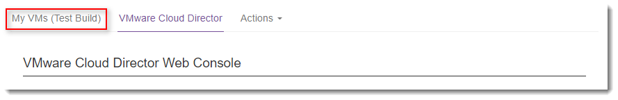
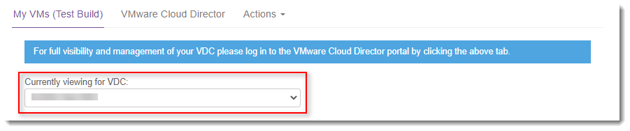
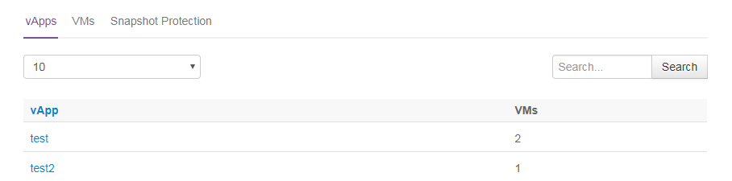
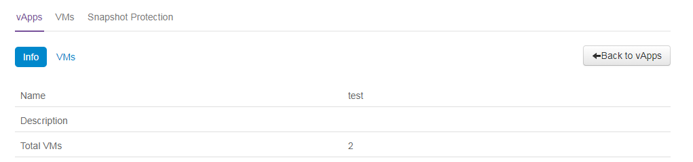
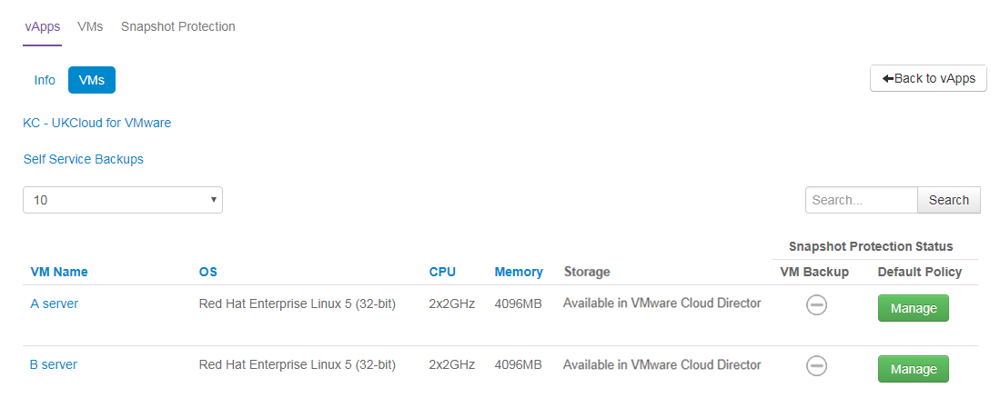
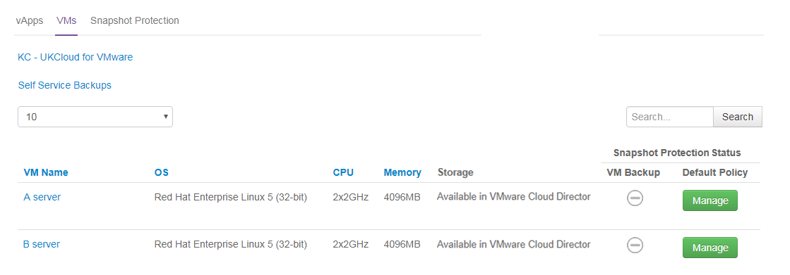
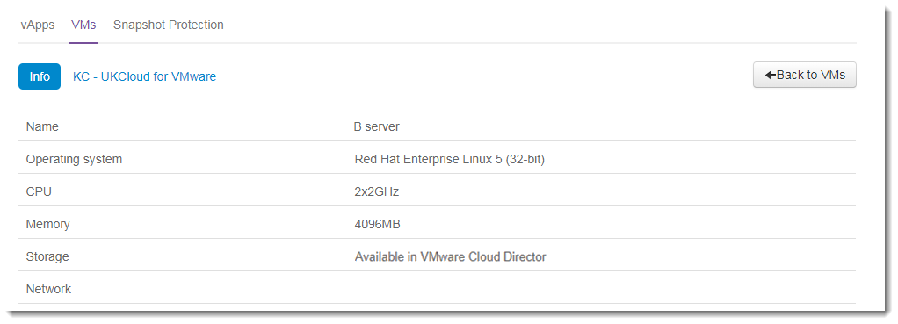

How to view your VMs in the UKCloud Portal
Overview
The My VMs page in the UKCloud Portal enables you to see, at a glance, the services currently operational within your environment. My VMs doesn't just cover virtual machines (VMs); it also covers deployed vApps, edge gateway settings and bandwidth monitoring.
If your system administrator has enabled billing for your account, you can also look at near real-time costs; both current month-to-date and an estimated monthly cost. You can see costs on a per-VM and per-vApp basis.
Accessing the My VMs page
To go to the My VMs page:
Log in to the UKCloud Portal.
For more detailed instructions, see the Getting Started Guide for the UKCloud Portal.
In the Portal navigation panel, expand VMware Cloud and then select the compute service with which you want to work.

Click the My VMs tab.

From the Currently viewing for VDC list, select the virtual data centre (VDC) you want to work with to see its settings and, if billing is enabled, estimated and actual costs.

Viewing information about vApps
The vApps tab shows a list of the vApps within the selected VDC. The information displayed includes the number of VMs within the vApp and the cost associated with the vApp, which can be shown in either month-to-date or estimated monthly cost.

Select the vApps tab.
Click a vApp name to view additional information about that vApp in the Info tab.

Select the VMs tab to see a list of the VMs within the selected vApp and their properties.

One useful property that you can see is the backup status.
In the example above, there is no backup policy for these VMs so the backup icon is greyed out. If backups are successful there will be a green icon, if backups have failed there will be a red icon.
Click a VM name to see additional information about it, including backup logs.
If you need to manage your backups for a VM, click the Manage button. For more information, see How to manage Snapshot Protection for your VMs.
Click Back to vApps to return to the main My VMs page.
Viewing information about VMs
The VMs tab displays a list of all VMs within your environment.

Select the VMs tab.
Click a VM to view its additional properties in the Info tab.

Click Back to VMs to return to the main My VMs page.
Viewing information about edge gateways
The Edge Gateways tab shows properties associates with the edge gateways that are deployed in your VDCs.
Select the Edge Gateway tab.
From the Select Edge list, select the edge gateway you want to work with.
- The Config tab shows basic configuration information for the edge
- The Firewall tab shows you information about the firewall rules configured for the edge.
- The NAT tab shows you information about the NAT rules configured for the edge.
- The VPN tab displays any VPNs that have been created against the selected edge
- The Events tab displays any events associated with the edge.
Viewing bandwidth monitoring information
The Bandwidth Monitoring tab displays bandwidth statistics for the edge gateways within your VDCs.
Note
Bandwidth Monitoring is not available on the Elevated OFFICIAL security platform.
Select the Bandwidth Monitoring tab.
From the Select Edge list, select the edge gateway you want to work with.
Select the appropriate tab to view different bandwidth statistics.
Viewing snapshot protection information
The Snapshot Protection tab enables you to specify a snapshot retention policy to apply to all the VMs in a VDC. You can apply the policy to all new VMs or to all new and existing VMs.
For more information about snapshot protection, see How to manage Snapshot Protection for your VMs.
Feedback
If you have any comments on this document or any other aspect of your UKCloud experience, send them to products@ukcloud.com.